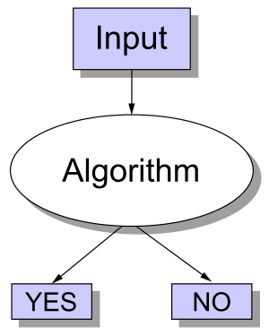

practical-satisfiability-and-np-complete-problems
Even though it was just a scant few years ago, my research in grad school seems like it was from another lifetime. Nowadays I deal with data and most of my code revolves around manipulating and extracting interesting stuff from it. However in my previous life I spent quite a bit of time dealing with satifiability problems. So before I start writing about data and related topics, I thought I'd kick it old school and write about some topics from my formative years: satisfiability.
Decision Problems and NP Complete Problems
Note: Feel free to skip this section if you're already familiar with these topics.
Before we get into some of the more heavy stuff, let's review some of the "basic" concepts that will help us put the satisfiability problem in context. I'm going to skip a lot of the formal math that typically comes from the branch of compute science called the theory of computation. Instead, I'm going to try to explain it in a simpler way -- or at least the way that I try to understand it [1].
One of the fundamental ideas in computing is a decision problem: something that has a yes/no answer (image from wikipedia).
Pretty simple, huh? Now there are other types of problems like function problems and optimization problems but you probably have some intuition that decision problems are something fundamental that we should be studying [2].
How fast can you go?
Now that we have a rough idea of what decision problems are, we can talk about the computational complexity of these problems. It's actually much more intuitive than it sounds. Basically, we want to answer questions about how many resources (e.g. CPU run-time, memory, network bandwidth, circuit size etc.) will be needed to solve a particular decision problem. Seems like a reasonable thing to investigate. For now, let's just focus on one of these aspects: run-time. Our goal here is to classify different types of problems in terms of how easy (or hard) they are to solve in terms of run-time.
If you've done any study of algorithms, you probably have a rough idea of the idea of polynomial time problems. Roughly speaking, if you can write a program to solve a decision problem (correctly) and its run-time scales polynomially with the size of the input, then you've got a polynomial time decision problem. Another name for this class of decision problems is "P". For example, the decision problem (let's call it FINDX):
FINDX: Does an array of \(n\) integers \(A = [a_1, a_2, \ldots, a_n]\) contain integer \(x\)?
is in P because it's simple to write an algorithm that gives yes/no in linear time in the size of the array \(n\) [3].
NP What?
So up to this point, I think most programmers will have a reasonable understanding of these concepts. Where it gets hairy is when we start talking about NP problems. The underlying idea is not complicated, it's just, well, strange.
When we write code, most of us are thinking about how to solve a problem. It's quite natural to do so and, in fact, we've defined a set of problems based on how fast we can solve them, the class of problems called P. However, NP problems are defined differently. It's not about how fast we can solve a problem, but how fast we can verify a potential answer to the problem [4]. In particular, NP is about how fast we can verify that this potential answer is correct. Say what?
Let's look back at our example. If we take the above example above of finding \(x\) in an array \(A\), we're not trying to figure out solution to this problem, we're trying to figure out something different:
Given \(A = [a_1, a_2, \ldots, a_n]\), we are either told that \(x\) is in \(A\) or it is not (i.e. the potential answer is yes or no), can we write an algorithm (in polynomial time) to figure out if what we are told is correct?
It turns out, yes, we can write that algorithm, it's going to look very similar to the one we used above [5]. So we would say, that FINDX is in (the class of decision problems called) NP.
Stop and think about this for a second. To figure out if FINDX was an NP problem, we didn't look at how easy it was to solve, but rather how easy it was to verify a potential solution was correct!? Why would we ever want to define problems in such strange, roundabout way? It turns out that many important, naturally arising problems can be classified as NP. Here are some more examples (try to see if you figure out why it would be classified as an NP problem):
- "Is an array of integers sorted?" (might want something like this for binary search)
- "Is there a path from vertex \(s\) to vertex \(t\) in graph \(G\)?" (something that you might want to do in a program like Google Maps).
- "Given a Boolean formula, is there an assignment to the variables to make the formula true?"
The last one is of particular note because that is what we're going to be talking about in the next section. Also note, that we saw that FINDX was in both P and NP. The more general result is that all all decision problems in P are in NP (but most likely not the other way around) [6].
There's one last concept that I should mention and it's the idea of NP complete problems (NPC for short). Without going into too much detail, a good way to think about it is as the "hardest problems" in NP. In the examples above, the problems that in P (e.g. FINDX) are typically considered "easy". Whereas the last problem is considered "hard". Suffice it to say, NPC problems are important because they are arise naturally in many contexts and are "hard" to solve.
NP is not "non-polynomial"
Before we end this section, a very important caution: NP does not stand for "non-polynomial" or "not polynomial", as one would intuitively think. P stands for (roughly) polynomial time, so doesn't it make sense for the "N" in NP to stand for "non-" or "not"? Yes, I agree, not a very good name much to the chagrin of new students of computational complexity.
NP actually stands for "nondeterministic polynomial time". The details aren't too important but the big takeaway is this: NPC problems probably have no polynomial time solution in the work case [6]. But as we saw, P problems are a subset of NP problems so at least some NP problems can be solved in polynomial time.
| [1] | Of course a simpler explanation in English without the math, necessarily makes it less precise. So the usual caveats apply. |
| [2] | For some intuition of why we study at decision problems, think about how "difficult" the different types of problems are. A yes/no answer seems a heck of a lot easier than coming up with a function, or optimizing something with constraints. So one way of thinking about it is: if we somehow figure out that a yes/no decision problem is hard, then we can reasonably conclude that the function/optimization "version" of the problem is also hard. Of course it's a bit more complicated but that's how I like to think about it. |
| [3] | A line is a type of polynomial. e.g. \(x = x^k\) where \(k=1\). |
| [4] | There are, of course, many (equivalent) ways to define NP problems. The one I use, which I find most intiutive is from Introduction to Algorithms <https://en.wikipedia.org/wiki/Introduction_to_Algorithms>, known more colloquially as "CLRS" (the first letters of the authors). |
| [5] | The solution: search through the array for \(x\), we'll get a yes/no answer here. If it matches what we're told, we say "yes", otherwise, we say "no". |
| [6] | (1, 2) This is the P vs. NP problem. |